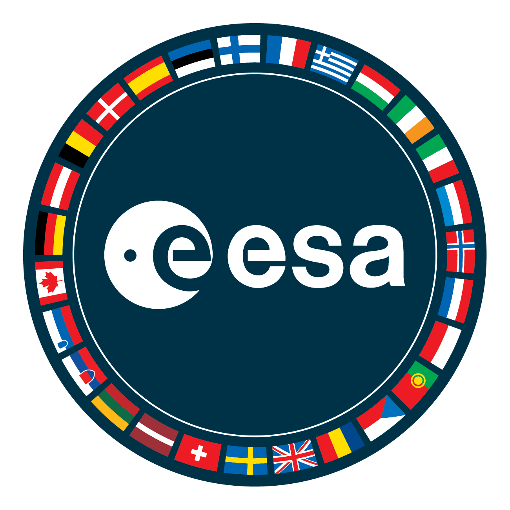
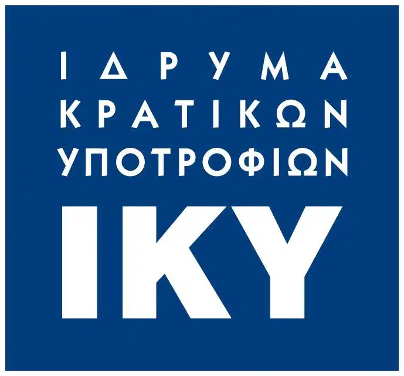
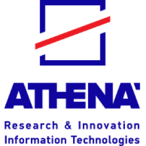

Funding

European Space Agency
TerraQ was originally developed in the context of DA4DTE


Greek State Scholarship Foundation
"NIK. D. XRYSOVERGI" PhD scholarship

Athena RC
"GD.402. ARCHI-YPPhD-0824" PhD scholarship